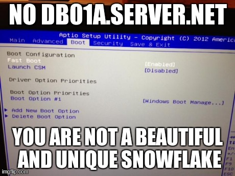

Configuring BIOS Settings With Puppet!
You know what it is like to spend time configuring the BIOS on a a server. You reboot the server, and wait for it to take its sweet time to come back up, frantically push its button, hope that you didn't miss your chance. Then spend some one-on-one alone time with the interface, making sure you do all the right keystrokes to get the settings you want. Sounds like a bad date.
The Problem
If you are good then you don't play the waiting game:
[root@server ~]$ ipmitool -H 192.168.0.120 -U root -P root chassis bootparam set bootflag force_bios
Set Boot Device to force_bios
[root@server ~]$ ipmitool -H 192.168.0.120 -U root -P root chassis power reset
Chassis Power Control: Reset
But even still, this doesn't get you around having to manually choose the bios settings you want. Human interaction leads to mistakes, and more importantly, servers are NOT snowflakes: 
{kind=link}
The Solution
Configuration Management = The Solution. I use puppet. Here is how I manage my BIOS settings with Puppet. However, the underlying tools are very vendor specific:
I'm not releasing my module yet due to IP junk, but here is the general overview to get you going for your particular needs:
class bios::setting::turbo($enable=true) {
case $enable {
true, '1', 'enable','on', 'true': { $set_value=1 $expect_value='Enabled' }
false, '0', 'disable', 'off', 'false': { $set_value=0 $expect_value='Disabled' }
}
exec { "$bios::syscfg_command /bcs 'Processor Configuration' 'Intel(R) Turbo Boost Technology' $set_value":
unless => "$bios::syscfg_command /d biossettings 'Intel(R) Turbo Boost Technology' | grep 'Current Value' | grep $expect_value",
provider => [ shell => 'sh' ]
}
}
This is just a skeleton example. I have to leave the installation of your vendor-specific tool as an exercise to the reader. For example here would be the same function for a Dell server:
case $enable {
true, '1', 'enable','on', 'true': { $set_value='enabled' }
false, '0', 'disable', 'off', 'false': { $set_value='disabled' }
}
exec { "$bios::setupbios_command setting set turbo_mode $set_value":
unless => "$bios::setupbios_command setting get turbo_mode | grep $set_value",
provider => [ shell => 'sh' ]
}
You are only limited by your Imagination… and whatever BIOS settings your vendor tool exports.
References: